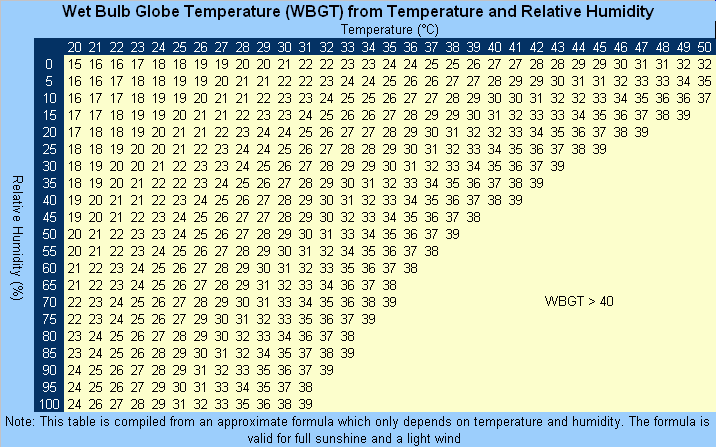

Humid Heat Metrics#
Overview#
Humid heat metrics index temperature and humidity, which is often more useful than comparing either variable alone when considering perceived temperature, as they together affect the human body’s ability to cool itself down. Humid heat metrics are especially important for the safety of outside workers, the elderly, or otherwise high-risk, high-exposure individuals[1].
Wet Bulb Globe Temperature (\(WBGT\)) is a measure of heat stress. The equations for outdoor (\(WBGT_{od}\)) and indoor/shaded (\(WBGT_{id}\)) WBGTs are[1]:
\(WBGT_{od} = 0.7*T_{nwb} + 0.2*T_g + 0.1*T_a\)
\(WBGT_{id} = 0.7*T_{nwb} + 0.3*T_g\)
where \(T_a\) refers to Dry Bulb Ambient Temperatue, \(T_{nwb}\) is the Natural Wet Bulb Temperature with exposure to wind and sun, and \(T_g\) is the Globe Temperature taken from inside a copper globe painted black and exposed to the sun[1].
However, this formula is complicated by the reality that Natural Wet Bulb Temperature and Globe Temperature are not always readily available variables from weather stations or atmospheric models.
In this notebook, we will demonstrate the Australian Bureau of Meteorology (ABM) and Bernard methods of predicting wet bulb global temperature with a focus on the July 1995 Chicago heatwave.
For our analysis, we have ERA5 reanalysis data for the lower contiguous United States (50°N, 24°S, -66°E, -125°W) from July 1995 with the variables: 2-meter temperature, 2-meter dew point temperature, surface pressure, and u/v wind components.
ERA5 is a reanalysis, a global weather/climate dataset that combines model output and observations with physical understanding to create a spatially and temporally consistent historic dataset, spanning from 1940 to today (updated every 5 days)[2].
import geocat.datafiles as gcd
import xarray as xr
import numpy as np
import matplotlib.pyplot as plt
import cartopy.crs as ccrs
from scipy import optimize
---------------------------------------------------------------------------
RemoteDisconnected Traceback (most recent call last)
File ~/micromamba/envs/geocat-applications/lib/python3.14/site-packages/urllib3/connectionpool.py:787, in HTTPConnectionPool.urlopen(self, method, url, body, headers, retries, redirect, assert_same_host, timeout, pool_timeout, release_conn, chunked, body_pos, preload_content, decode_content, **response_kw)
786 # Make the request on the HTTPConnection object
--> 787 response = self._make_request(
788 conn,
789 method,
790 url,
791 timeout=timeout_obj,
792 body=body,
793 headers=headers,
794 chunked=chunked,
795 retries=retries,
796 response_conn=response_conn,
797 preload_content=preload_content,
798 decode_content=decode_content,
799 **response_kw,
800 )
802 # Everything went great!
File ~/micromamba/envs/geocat-applications/lib/python3.14/site-packages/urllib3/connectionpool.py:534, in HTTPConnectionPool._make_request(self, conn, method, url, body, headers, retries, timeout, chunked, response_conn, preload_content, decode_content, enforce_content_length)
533 try:
--> 534 response = conn.getresponse()
535 except (BaseSSLError, OSError) as e:
File ~/micromamba/envs/geocat-applications/lib/python3.14/site-packages/urllib3/connection.py:571, in HTTPConnection.getresponse(self)
570 # Get the response from http.client.HTTPConnection
--> 571 httplib_response = super().getresponse()
573 try:
File ~/micromamba/envs/geocat-applications/lib/python3.14/http/client.py:1450, in HTTPConnection.getresponse(self)
1449 try:
-> 1450 response.begin()
1451 except ConnectionError:
File ~/micromamba/envs/geocat-applications/lib/python3.14/http/client.py:336, in HTTPResponse.begin(self)
335 while True:
--> 336 version, status, reason = self._read_status()
337 if status != CONTINUE:
File ~/micromamba/envs/geocat-applications/lib/python3.14/http/client.py:305, in HTTPResponse._read_status(self)
302 if not line:
303 # Presumably, the server closed the connection before
304 # sending a valid response.
--> 305 raise RemoteDisconnected("Remote end closed connection without"
306 " response")
307 try:
RemoteDisconnected: Remote end closed connection without response
During handling of the above exception, another exception occurred:
ProtocolError Traceback (most recent call last)
File ~/micromamba/envs/geocat-applications/lib/python3.14/site-packages/requests/adapters.py:644, in HTTPAdapter.send(self, request, stream, timeout, verify, cert, proxies)
643 try:
--> 644 resp = conn.urlopen(
645 method=request.method,
646 url=url,
647 body=request.body,
648 headers=request.headers,
649 redirect=False,
650 assert_same_host=False,
651 preload_content=False,
652 decode_content=False,
653 retries=self.max_retries,
654 timeout=timeout,
655 chunked=chunked,
656 )
658 except (ProtocolError, OSError) as err:
File ~/micromamba/envs/geocat-applications/lib/python3.14/site-packages/urllib3/connectionpool.py:841, in HTTPConnectionPool.urlopen(self, method, url, body, headers, retries, redirect, assert_same_host, timeout, pool_timeout, release_conn, chunked, body_pos, preload_content, decode_content, **response_kw)
839 new_e = ProtocolError("Connection aborted.", new_e)
--> 841 retries = retries.increment(
842 method, url, error=new_e, _pool=self, _stacktrace=sys.exc_info()[2]
843 )
844 retries.sleep()
File ~/micromamba/envs/geocat-applications/lib/python3.14/site-packages/urllib3/util/retry.py:490, in Retry.increment(self, method, url, response, error, _pool, _stacktrace)
489 if read is False or method is None or not self._is_method_retryable(method):
--> 490 raise reraise(type(error), error, _stacktrace)
491 elif read is not None:
File ~/micromamba/envs/geocat-applications/lib/python3.14/site-packages/urllib3/util/util.py:38, in reraise(tp, value, tb)
37 if value.__traceback__ is not tb:
---> 38 raise value.with_traceback(tb)
39 raise value
File ~/micromamba/envs/geocat-applications/lib/python3.14/site-packages/urllib3/connectionpool.py:787, in HTTPConnectionPool.urlopen(self, method, url, body, headers, retries, redirect, assert_same_host, timeout, pool_timeout, release_conn, chunked, body_pos, preload_content, decode_content, **response_kw)
786 # Make the request on the HTTPConnection object
--> 787 response = self._make_request(
788 conn,
789 method,
790 url,
791 timeout=timeout_obj,
792 body=body,
793 headers=headers,
794 chunked=chunked,
795 retries=retries,
796 response_conn=response_conn,
797 preload_content=preload_content,
798 decode_content=decode_content,
799 **response_kw,
800 )
802 # Everything went great!
File ~/micromamba/envs/geocat-applications/lib/python3.14/site-packages/urllib3/connectionpool.py:534, in HTTPConnectionPool._make_request(self, conn, method, url, body, headers, retries, timeout, chunked, response_conn, preload_content, decode_content, enforce_content_length)
533 try:
--> 534 response = conn.getresponse()
535 except (BaseSSLError, OSError) as e:
File ~/micromamba/envs/geocat-applications/lib/python3.14/site-packages/urllib3/connection.py:571, in HTTPConnection.getresponse(self)
570 # Get the response from http.client.HTTPConnection
--> 571 httplib_response = super().getresponse()
573 try:
File ~/micromamba/envs/geocat-applications/lib/python3.14/http/client.py:1450, in HTTPConnection.getresponse(self)
1449 try:
-> 1450 response.begin()
1451 except ConnectionError:
File ~/micromamba/envs/geocat-applications/lib/python3.14/http/client.py:336, in HTTPResponse.begin(self)
335 while True:
--> 336 version, status, reason = self._read_status()
337 if status != CONTINUE:
File ~/micromamba/envs/geocat-applications/lib/python3.14/http/client.py:305, in HTTPResponse._read_status(self)
302 if not line:
303 # Presumably, the server closed the connection before
304 # sending a valid response.
--> 305 raise RemoteDisconnected("Remote end closed connection without"
306 " response")
307 try:
ProtocolError: ('Connection aborted.', RemoteDisconnected('Remote end closed connection without response'))
During handling of the above exception, another exception occurred:
ConnectionError Traceback (most recent call last)
Cell In[1], line 1
----> 1 import geocat.datafiles as gcd
2 import xarray as xr
3 import numpy as np
File ~/micromamba/envs/geocat-applications/lib/python3.14/site-packages/geocat/datafiles/__init__.py:38
35 if dev_data_path is not None and os.path.exists(dev_data_path):
36 POOCH.path = dev_data_path
---> 38 _update_registry(POOCH)
40 def get(fname):
41 return POOCH.fetch(fname)
File ~/micromamba/envs/geocat-applications/lib/python3.14/site-packages/geocat/datafiles/__init__.py:28, in _update_registry(p)
24 """
25 Updates pooch registry.txt
26 """
27 old_sha256 = p.registry["registry.txt"]
---> 28 new_sha256 = hashlib.sha256(requests.get(p.get_url("registry.txt")).content).hexdigest()
29 if old_sha256 != new_sha256:
30 p.registry["registry.txt"] = new_sha256
File ~/micromamba/envs/geocat-applications/lib/python3.14/site-packages/requests/api.py:73, in get(url, params, **kwargs)
62 def get(url, params=None, **kwargs):
63 r"""Sends a GET request.
64
65 :param url: URL for the new :class:`Request` object.
(...) 70 :rtype: requests.Response
71 """
---> 73 return request("get", url, params=params, **kwargs)
File ~/micromamba/envs/geocat-applications/lib/python3.14/site-packages/requests/api.py:59, in request(method, url, **kwargs)
55 # By using the 'with' statement we are sure the session is closed, thus we
56 # avoid leaving sockets open which can trigger a ResourceWarning in some
57 # cases, and look like a memory leak in others.
58 with sessions.Session() as session:
---> 59 return session.request(method=method, url=url, **kwargs)
File ~/micromamba/envs/geocat-applications/lib/python3.14/site-packages/requests/sessions.py:589, in Session.request(self, method, url, params, data, headers, cookies, files, auth, timeout, allow_redirects, proxies, hooks, stream, verify, cert, json)
584 send_kwargs = {
585 "timeout": timeout,
586 "allow_redirects": allow_redirects,
587 }
588 send_kwargs.update(settings)
--> 589 resp = self.send(prep, **send_kwargs)
591 return resp
File ~/micromamba/envs/geocat-applications/lib/python3.14/site-packages/requests/sessions.py:703, in Session.send(self, request, **kwargs)
700 start = preferred_clock()
702 # Send the request
--> 703 r = adapter.send(request, **kwargs)
705 # Total elapsed time of the request (approximately)
706 elapsed = preferred_clock() - start
File ~/micromamba/envs/geocat-applications/lib/python3.14/site-packages/requests/adapters.py:659, in HTTPAdapter.send(self, request, stream, timeout, verify, cert, proxies)
644 resp = conn.urlopen(
645 method=request.method,
646 url=url,
(...) 655 chunked=chunked,
656 )
658 except (ProtocolError, OSError) as err:
--> 659 raise ConnectionError(err, request=request)
661 except MaxRetryError as e:
662 if isinstance(e.reason, ConnectTimeoutError):
663 # TODO: Remove this in 3.0.0: see #2811
ConnectionError: ('Connection aborted.', RemoteDisconnected('Remote end closed connection without response'))
era5 = xr.open_dataset(gcd.get("netcdf_files/era5_1995-07-14T12.nc"))
era5.u10
# Convert from Kelvin to Celsius
era5['t2m_C'] = era5['t2m'] - 273.15
era5['d2m_C'] = era5['d2m'] - 273.15
# Chicago coordinates
lat_chicago = 41.8781
lon_chicago = -87.6298
Australian Bureau of Meteorology (ABM)#
The Australian Bureau of Meteorology’s method of estimating Wet Bulb Global Temperature is attractive due to its simplicity. It only requires temperature and relative humidity[3].
Below is a chart of WBGT from relative humidity and temperature[3]:

This method tends to overpredict WBGT compared to other models and assumes full sunlight and light breeze.
def calc_abm_wbgt(t_a, rh):
p = (
(rh / 100) * 6.105 * np.exp(17.27 * t_a / (237.7 + t_a))
) # water vapor pressure [hPa]
wbgt = (0.567 * t_a) + (0.393 * p) + 3.94
return wbgt
To use our ERA5 data in this equation, we need to first calculate relative humidity (the ratio of vapor pressure to saturation pressure) from temperature and dewpoint. To do this we use the Magnus-Tetens Approximation for vapor pressure[4]:
\(e = 6.11 \exp {\left( \frac{17.625 \times t}{t + 243.04} \right)}\)
where \(e\) is vapor pressure and \(t\) is temperature in Kelvin.
def _calc_vapor_pressure(t): # Magnus-Tetens Approximation
e = 6.11 * np.exp((17.27 * t) / (t + 237.3)) # Vapor Pressure in hPa
return e
def calc_relative_humidity_era5(t_a, t_d):
e = _calc_vapor_pressure(t_d) # vapor pressure from dew point temp
e_sat = _calc_vapor_pressure(t_a) # saturation vapor pressure
rh = 100 * e / e_sat # Clausius-Clapeyron equation
return rh
rh = calc_relative_humidity_era5(era5.t2m_C, era5.d2m_C)
wbgt_abm = calc_abm_wbgt(era5.t2m_C, rh)
wbgt_abm
Plotting Chicago ABM WBGT#
fig = plt.figure()
ax = plt.axes(projection=ccrs.PlateCarree())
c = plt.contourf(era5.longitude, era5.latitude, wbgt_abm, cmap='inferno')
ax.coastlines()
cbar = plt.colorbar(c, ax=ax, orientation='horizontal')
cbar.set_label('Wet Bulb Global Temperature' + '\N{DEGREE SIGN}' + 'C')
ax.set_title('July 14, 1995 noon - ABM WBGT')
# Annotate location of Chicago
ax.plot(lon_chicago, lat_chicago, 'k*');
Bernard#
Bernard’s semi-empirical formula approximates Natural Wet Bulb temperature based on heat exchange of a wetted wick exposed to sun and wind based on measurements of common United States summertime environmental conditions[5].
This is considered an indoor WBGT temperature because it does not include any strong radiative sources in the calculation.
\( WBGT_{id} = \begin{cases} 0.7T_{pwb} + 0.3T_a & \text{if } v > 3 m/s\\ 0.67T_{pwb} + 0.33T_a − 0.048 log_10v (T_a − T_{pwb}) & \text{if } 0.3 \geq v \leq 3 m/s \end{cases} \)
In Bernard’s analysis, wind speeds less than 0.3 m/s are not included since the field of humid heat metrics is primarily concerned with workers, and an outdoor worker is unlikely to be stationary. Apparent wind speeds are assumed to be at least 1 m/s[5].
This formula utilizes thermodynamic Wet Bulb Temperature (\(T_{pwb}\)), which is a wet bulb temperature in the shade and fanned or rotated. This is the wet bulb typically used for dew point calculations, and can be iteratively derived from temperature (\(T_a\)) and dewpoint (\(T_d\)).
# Bernard formula for WBGT
def calc_bernard_wbgt(t_a, t_pwb, v):
if np.all(v < 0.3): # m/s
return np.nan # Return NaN where velocity is below the threshold
elif np.all((0.3 <= v) & (v <= 3)):
wbgt = (0.67 * t_pwb) + (0.33 * t_a) - (0.48 * np.log10(v) * (t_a - t_pwb))
else:
wbgt = (0.7 * t_pwb) + (0.3 * t_a)
return wbgt
$T_{pwb}$ is iteratively solved from McPherson’s formula[6]:
\(1556 e_d - 1.484 e_d * T_{pwb} - 1556 e_w + 1.484 * e_w * T_{pwb} + 1010 * (t_a - t_pwb) = 0\)
where \(e_d = 6.106 * exp(17.27 * T_d / (237.3 + T_d))\)
and \(e_w = 6.106 * exp(17.27 * T_{pwb} / (237.3 + T_{pwb}))\)
Here we use a Newton-Raphson iterative method for the iterative solve for \(t_{pwb}\).
\(x_{n+1} = x_n - \frac{f(x_n)}{f'(x_n)}\)
Essentially, Newton-Raphson is a root finding method that plugs your initial guess into the equation in question and the derivative of that equation in order to get a more accurate guess [7]. This is repeated until your new guess is sufficiently close. Thankfully we have scipy.optimize.newton() to handle this solve for us.
# Scalar function to compute t_pwb
def _calc_tpwb_scalar(t_a, t_d):
def f(t_pwb):
e_d = 6.106 * np.exp(17.27 * t_d / (237.3 + t_d)) # hPa
# e_w = 6.106 * np.exp(17.27 * t_pwb / (237.3 + t_pwb))
func = (
1556 * e_d
- 1.484 * e_d * t_pwb
- 1556 * (6.106 * np.exp(17.27 * t_pwb / (237.3 + t_pwb)))
+ 1.484 * (6.106 * np.exp(17.27 * t_pwb / (237.3 + t_pwb))) * t_pwb
+ 1010 * (t_a - t_pwb)
)
return func
def f_prime(t_pwb, h=1e-5): # numerical derivative
return (f(t_pwb + h) - f(t_pwb - h)) / (2 * h)
# Use the Newton-Raphson method with scipy's newton function
t_pwb_0 = t_d # initial guess
t_pwb = optimize.newton(f, t_pwb_0, fprime=f_prime, tol=1e-6, maxiter=100)
return t_pwb
# Apply function over grid
def _calc_tpwb(t_a, t_d):
return xr.apply_ufunc(
_calc_tpwb_scalar,
t_a,
t_d,
vectorize=True,
dask="parallelized",
output_dtypes=[float],
)
v = np.sqrt(era5.u10**2 + era5.v10**2) # combine u and v wind components
t_pwb = _calc_tpwb(era5.t2m_C, era5.d2m_C)
wbgt_bernard = calc_bernard_wbgt(era5.t2m_C, t_pwb, v)
wbgt_bernard
Plotting Chicago Bernard WBGT#
fig = plt.figure()
ax = plt.axes(projection=ccrs.PlateCarree())
c = plt.contourf(era5.longitude, era5.latitude, wbgt_bernard, cmap='inferno')
ax.coastlines()
cbar = plt.colorbar(c, ax=ax, orientation='horizontal')
cbar.set_label('Wet Bulb Global Temperature' + '\N{DEGREE SIGN}' + 'C')
ax.set_title('July 14, 1995 noon - Bernard WBGT method')
# Annotate location of Chicago
ax.plot(lon_chicago, lat_chicago, 'k*');
Comparing methods#
When comparing our output from both ABM and Bernard, ABM tends to estimate at higher WBGT by 4 - 7 degrees Celsius.
fig = plt.figure()
ax = plt.axes(projection=ccrs.PlateCarree())
ax.coastlines()
diff = wbgt_abm - wbgt_bernard
c = plt.contourf(era5.longitude, era5.latitude, diff, cmap='Reds')
cbar = plt.colorbar(c, ax=ax, orientation='horizontal')
cbar.set_label(
'\N{GREEK CAPITAL LETTER DELTA} Wet Bulb Global Temperature'
+ '\N{DEGREE SIGN}'
+ 'C'
)
ax.set_title('July 14, 1995 noon - WBGT Difference (ABM - Bernard)')
# Annotate location of Chicago
ax.plot(lon_chicago, lat_chicago, 'k*');